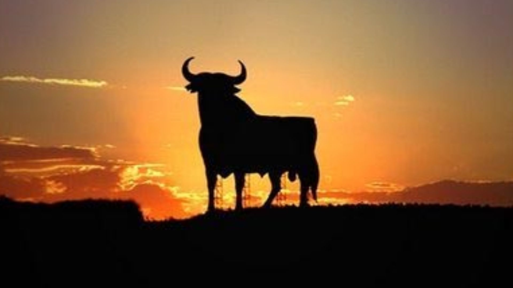
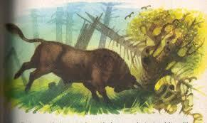

En el Perú las leyendas y mitos abundan. Cada ciudad esconde una que causa sorpresa, terror o por lo menos mantiene a la expectativa a los habitantes. Una de ellas es la del Toro Encantado, en el centro de la sierra peruana. Este animal mítico y de características particulares, es capaz de llevar a un pueblo a la miseria ¿De dónde es o cuál es su historia?
Ubicada en Huanta, Ayacucho, la hermosa laguna de Razuhuillca está en medio de otras tres lagunas que la rodean, pero la central es la mas grande, por lo tanto, la principal. Se ubica en la cima de un cerro que domina la entrada del pueblo, por eso se ha construido en ella una represa que suministra de agua para el regadío, y para el consumo del pueblo.
Según los pobladores, dentro de esta laguna habita un corpulento y violento toro negro que está amarrado a unas cadenas que las ancestrales personas pudieron sujetar en su momento. Sin embargo, causó muchos problemas y desastres en varias oportunidades, por lo que el miedo de que este animal vuelva a salir aún existe.

En reiteradas ocasiones, este mamífero con cuernos salía de las profundidades de la laguna inundando todo el pueblo huantino. Cansados de esta situación, los pobladores diseñaron un primer plan para detener al animal y la sacrificada sería una mujer mayor.

Una anciana, sabiendo de su delicado estado de salud, decidió sacrificarse para poder contener a la salvaje especie. Según se relata, la mujer realizó un ritual y se lanzó junto con una enorme jaula de gruesos barrotes de fierro encantados a lo más profundo del lago. Allí, encontró al animal dormido, y como pudo, lo ingresó dentro de la jaula. La paz y tranquilidad llegó a los habitantes de Huanta, que sabían que su peor enemigo estaba encerrado en las profundidades.
Para sorpresa de todos, esto no fue suficiente y en un descuido de la anciana, además de la inimaginable fuerza del toro, este logró desprenderse de su prisión y volvió a inundar a la localidad. Ante esto, los pobladores no tuvieron más opción que volver a amarrar al toro con cadenas y resguardarlo para que no vuelva a escapar. Desde aquel momento, el pueblo vive en constante vigilia ante el peligro de que el toro encantado pueda inundar nuevamente el pueblo de Huanta.